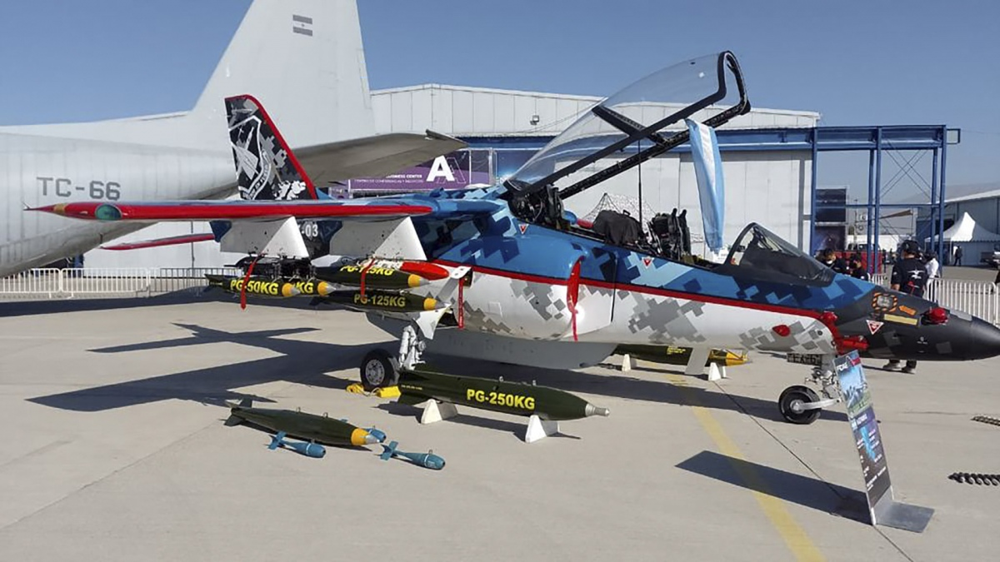

Fue diseñado para entrenamiento avanzado y su versión más reciente adquirió capacidades tácticas y la posibilidad de entrenar pilotos en combates virtualizados a través de sus sistemas electrónicos. Autoridades de las Fuerzas Aéreas de diversos países de la región demostraron interés en el avión de entrenamiento avanzado IA 60 "Pampa III" desarrollado y construido por la Fábrica Argentina de Aviones (FAdeA), cuya más reciente versión adquiere capacidades tácticas y la posibilidad de entrenar pilotos en combates virtualizados a través de sus sistemas electrónicos. El "Pampa" fue diseñado en cooperación con una empresa alemana hace 4 décadas y hoy todavía es producido para la Fuerza Aérea Argentina (FAA) en la Fábrica Argentina de Aviones (FAdeA). En estos casi 40 años algunos de los fabricantes de los componentes originales desaparecieron, varios de los sistemas y tecnologías con las que fue concebido quedaron obsoletas y eso hizo necesario el desarrollo de una red de pymes tecnológicas nacionales que pudiesen producir esos componentes o versiones actualizadas de los mismos.
